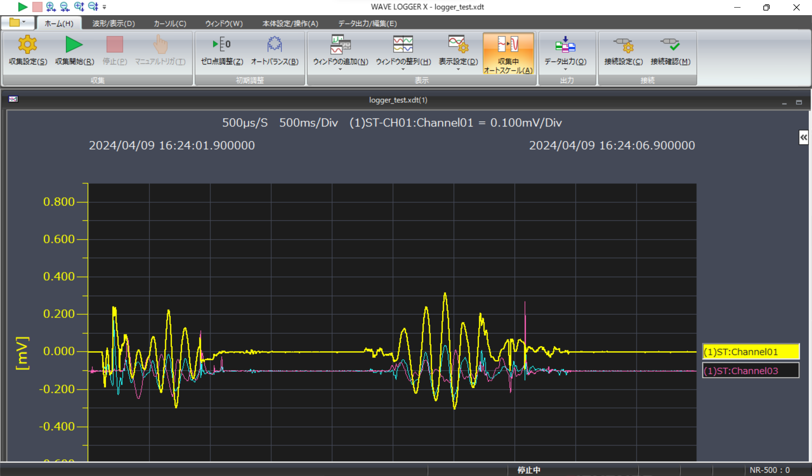
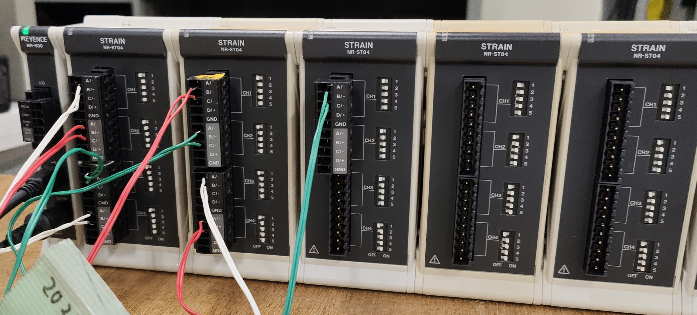
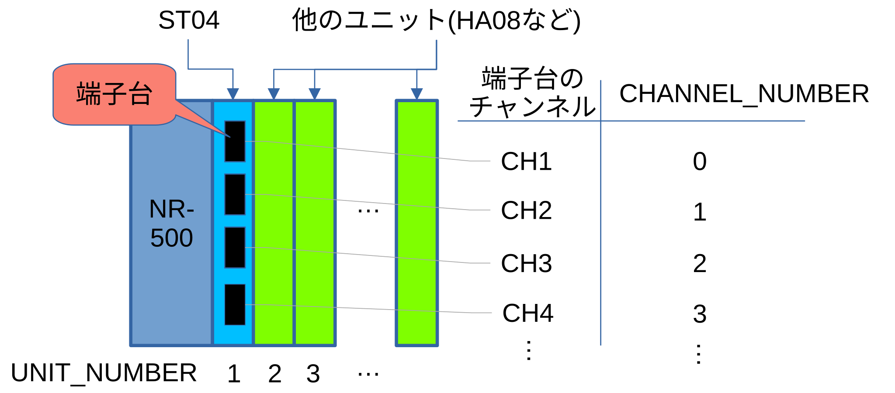
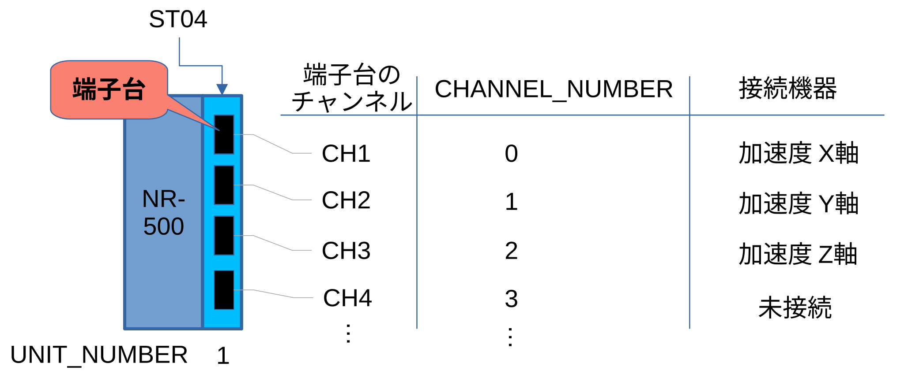

オートメーションサーバ機能とは
キーエンス製データロガーの専用ソフトウェア「WAVE LOGGER X」を、Python, C#, VBAで操作できる機能です（Webアプリケーションで言うところのAPI? みたいな感じです）。WAVE LOGGER X 自体は、マウスでポチポチ操作できるソフトです（綺麗なGUI）。このようにマウスで操作するところを、他のプログラミング言語（Python, C#, VBA）で自動的に操作するのが、オートメーションサーバ機能です。とても便利です(‘ω’)

オートバランスできない…
キーエンス製データロガー（今回はNR-500を使用）でひずみ計測ユニット（NR-ST04）を使うときは、測定開始前に必ず「オートバランス」（ブリッジ回路のゼロ点補正）をする必要があります。WAVE LOGGER Xを使っているときは、「オートバランス」ボタンをただポチっとするだけでよいのですが、オートメーションサーバ機能ではこれにかなり苦労しました。
ネット情報がほとんど見当たらなかったので（現状では驚くほど情報が少ない）、今回はその解決方法を共有したいと思います！
下の画像は（研究室の）実験室にある、キーエンスのNR-500とNR-ST04です。（NR-ST04がなんかたくさんある ← もちろん理由はあります）

解決策
初めにサンプルコード全体を載せます。他のシステムとの統合を考えていたので、コードはPythonで作成しています。
基本的にはキーエンスのサンプルプログラム（「C:\program files\KEYENCE\WAVE LOGGER X\samples\Automation.zip」に入ってる）と同じ感じですが、オートバランスを自動で行う、測定データを自動保存する処理を追加しています。
オートバランスの進捗状態を確認してから、次の処理を実行するというのがポイントです。
import os # ファイルパスの取得などに使用
import time # 待ち時間などを制御するために使用
import win32com.client # Windowsでアプリを操作するためのAPI
from pathlib import Path # ファイルパスの取得などに使用
# 初期設定
NR500_USB_ID_START = 0
NR500_USB_ID_END = 3
STATE_START_WAIT = 2
STATE_TRIGGER_WAIT = 3
STATE_RUN = 4
STATE_REPEAT_RUN = 5
STATE_PRE_TRIGGER = 6
STATE_POST_TRIGGER = 7
STATE_STOP_WAIT = 8
STATE_READ_WAIT = 10
STATE_PROCEDURE_WAIT = 12
UNIT_NUMBER = 1
GROUP_NUMBER = 0
CHANNEL_NUMBER = 0
# Pythonファイル名、収集設定ファイル名、（ロガーの）グループ番号を設定
argv = ["python_file_path", "xdt_file_path", "group_number"]
argv[0] = str(Path.cwd()) + r"\logging.py" # 収集用のプログラムの場所（オートメーションサーバのコマンドを使う側のプログラム）
argv[1] = str(Path.cwd()) + r"\logger_test.xdt" # WAVE LOGGER X の収集設定ファイルの場所（上のプログラムと同じ階層）
argv[2] = GROUP_NUMBER # グループ番号（NR-500の場合は「0」）
# パスとグループ番号の表示（絶対パスが正しいか確認）
print("argv[0]:", argv[0], "argv[1]:", argv[1], "argv[2]:", argv[2])
def main():
# ファイルのパスを取得
file_path = argv[1] # 収集設定ファイル名
# 収集設定ファイルが存在するか確認
if not os.path.isfile(file_path):
print("File not exist")
return
# グループ番号の取得
id = int(argv[2])
# WAVE LOGGER X のアプリ起動＆初期化
wave_logger = win32com.client.Dispatch("WaveLoggerX.Application") # WAVE LOGGER X のアプリを起動
wave_logger.Initialize() # アプリ初期化
wave_logger.Visible = True # Trueにすると、WAVE LOGGERの画面が見えるようになる（アプリの画面が起動してくる）
# 収集設定ファイルを開く
print("収集設定ファイルを開きます")
open_result = wave_logger.OpenFile(file_path)
# 取集設定ファイルが開けなかった場合は、エラーを表示して終了
if open_result != 0:
print("File open error [error code: %d]" %open_result)
return
# 機器IDを取得（※複数の WAVE LOGGER が起動していると取得に失敗するので注意）
print("IDをセット")
id_result = wave_logger.SetIdentifier(id)
# IDの取得に失敗した場合はエラーを表示して終了
if id_result != 0:
print("Failed to set the device ID [error code: %d]" %id_result)
return
# オートバランス
print("オートバランス開始")
# オートバランスの実行（3CH分）
AT_BAL_RESULT = wave_logger.AutoBalance(GROUP_NUMBER, UNIT_NUMBER, 0 | 1 | 2) # 3つめの引数に 0,1,2 は CH1, CH2, CH3 を表す
AT_BAL_PROGRESS = wave_logger.GetAdjustStatus # オートバランスの進捗状況を取得
# オートバランスの進捗状況を表示しながら、処理が完了するまで待つ
while AT_BAL_PROGRESS != 0:
AT_BAL_PROGRESS = wave_logger.GetAdjustStatus
print("オートバランス中です... 進捗：", AT_BAL_PROGRESS , "[%]")
if AT_BAL_RESULT == True:
print("CH1,2,3のオートバランスに成功しました")
else :
print("CH1,2,3のオートバランスに失敗しました")
# 収集開始
start_result = wave_logger.Start
print("収集開始")
if start_result != 0:
print("Starting acquisition failed [error code: %d]" %start_result)
return
document = wave_logger.GetActiveFile # 起動しているファイルから情報（WAVE LOGGER の起動状態，収集しているデータ数などを取得）
state = wave_logger.GetState # WAVE LOGGER の動作状態を取得（この数字によって動作状態が分かる。詳しくは公式マニュアルを参照）
print("動作状態：", state) # 動作状態を表示
# 現在のデータサンプル数を取得
try:
while is_running(wave_logger.GetState):
print("\r"+"The amount of sampling data: " + str(document.GetDataCount) + ", Value:"+str(document.GetCurrentData(UNIT_NUMBER,CHANNEL_NUMBER))+
" (Press 'Ctrl + C' to stop acquisition)", end="")
# キーボードからの割り込み入力「Ctrl+C」があったら収集を停止する
except KeyboardInterrupt:
wave_logger.Stop()
while is_running(wave_logger.GetState):
time.sleep(1)
# ループを抜けたら、測定データをcsv保存
document.SaveCsvFile( str(Path.cwd()) + "\\sample_data.csv")
print("測定データを保存しました")
# データ数，収集停止用のメッセージを表示
print("\r"+"The amount of sampling data: " + str(document.GetDataCount) +
" point (Press 'Ctrl + C' to stop acquisition)")
print("Press Enter to exit")
input()
# ソフトの起動状態を調べる関数
def is_running(state):
return state in {STATE_START_WAIT,
STATE_TRIGGER_WAIT,
STATE_RUN,
STATE_REPEAT_RUN,
STATE_PRE_TRIGGER,
STATE_POST_TRIGGER,
STATE_STOP_WAIT,
STATE_READ_WAIT,
STATE_PROCEDURE_WAIT}
# ヘルプを表示するための関数
def show_help():
print("<Operation explanation>")
print("Reads the specified setting file, "
"confirms the connection, and starts acquisition")
print()
print("<How to use>")
print("$ python Sample1.py <Settings file path> "
"<Connection identifier> <IP address(option)> <port number(option)>")
print(" [Settings file path]")
print(" xcf, xdt, ycf, ydt, kdt File")
print(" [Connection identifier]")
print(" 0 : NR-500 USB ID0")
print(" 1 : NR-500 USB ID1")
print(" 2 : NR-500 USB ID2")
print(" 3 : NR-500 USB ID3")
print(" 4 : NR-X100 USB ID0")
print(" 5 : NR-X100 USB ID1")
print(" 6 : NR-X100 USB ID2")
print(" 7 : NR-X100 USB ID3")
print(" 8 : NR-X100 LAN ID0")
print(" 9 : NR-X100 LAN ID1")
print(" 10: NR-X100 LAN ID2")
print(" 11: NR-X100 LAN ID3")
print(" [IP address]")
print(" IP address of the NRX-100 to be connected")
print(" Must be specified in the case of "
"Connection identifier is 8 to 11 (LAN Connection)")
print()
print("<Example>")
print("Sample1.py C:\\NR-500Sample.xdt 0")
print("Sample1.py C:\\NR-X100Sample.ydt 8 192.168.100.100 24682")
print
main()プログラム解説
上のプログラムの要点を解説します！
モジュールのインポート
プログラムで使用するいくつかのモジュールをインポートしています。3つめの win32com.client は 「pywin32」 というモジュールで、pipコマンドなどでインストールする必要があります。
import os # ファイルパスの取得などに使用
import time # 待ち時間などを制御するために使用
import win32com.client # Windowsでアプリを操作するためのAPI
from pathlib import Path # ファイルパスの取得などに使用初期設定
NR-500の場合は、ほぼこれのコピペでいいと思います。UNIT_NUMBERとCHANNEL_NUMBERは下のイラストみたいに、データを読み出したい測定ユニットの場所や、使用するチャンネルによって変更します。
NR500_USB_ID_START = 0
NR500_USB_ID_END = 3
STATE_START_WAIT = 2
STATE_TRIGGER_WAIT = 3
STATE_RUN = 4
STATE_REPEAT_RUN = 5
STATE_PRE_TRIGGER = 6
STATE_POST_TRIGGER = 7
STATE_STOP_WAIT = 8
STATE_READ_WAIT = 10
STATE_PROCEDURE_WAIT = 12
UNIT_NUMBER = 1 # 測定器ユニットの構成によって変更
GROUP_NUMBER = 0
CHANNEL_NUMBER = 0 # ユニットの使用チャンネル数に応じて変更
Pythonファイル名、収集設定ファイル名、（ロガーの）グループ番号を設定
特に argv[1] のところが大事で、WAVE LOGGER X の収集設定ファイルの絶対パスを出しておく必要があります。このプログラムでは、Pythonファイル（logging.py）と同じフォルダに収集設定ファイルを置いておくことで、プログラムを実行できるようにしています。
argv = ["python_file_path", "xdt_file_path", "group_number"]
argv[0] = str(Path.cwd()) + r"\logging.py" # 収集用のプログラムの場所（オートメーションサーバのコマンドを使う側のプログラム）
argv[1] = str(Path.cwd()) + r"\logger_test.xdt" # WAVE LOGGER X の収集設定ファイルの場所（上のプログラムと同じ階層）
argv[2] = GROUP_NUMBER # グループ番号（NR-500の場合は「0」）WAVE LOGGER X のアプリ起動＆初期化
ここで pywin32を使って、「WAVE LOGGER X」のアプリケーションを起動します。そして、WAVE LOGGERオブジェクトを、「wave_logger」というオブジェクト名で保存して、保存したオブジェクトを使って初期化（Initialize）を行っています。
wave_logger = win32com.client.Dispatch("WaveLoggerX.Application") # WAVE LOGGER X のアプリを起動
wave_logger.Initialize() # アプリ初期化
wave_logger.Visible = True # Trueにすると、WAVE LOGGERの画面が見えるようになる（アプリの画面が起動してくる）機器IDを取得
PCに接続されているNRの機器IDを取得します。このときに、複数の WAVE LOGGER が起動していると取得に失敗するので注意してください。
id_result = wave_logger.SetIdentifier(id) オートバランス
中々うまく行かず、一番苦労した処理です(;‘∀’)。ひずみ測定ユニット（今回はST04を使用）を使うときは、測定前に必ず実行します。
この処理のポイントは下側のwhileループの部分で、進捗が 0 %（100 % から 0 %に変化します）になるまで、次の処理に行かないようにしているところです。進捗の取得には GetAdjustStatus メソッドを使ってます。
一番上の行の wave_logger.AutoBalanceの一番右側の引数に、オートバランスの対象にしたいチャンネルを or記号「|」 でつなげて書きます。今回は、3軸加速度計（東京測器：ARF-20A-T）の X, Y, Z軸 方向の出力をそれぞれ、CH1, 2, 3（引数に書くときは、0 | 1 | 2 ） に接続しました。
GetAdjustStatus メソッドは、AutoBalance中のチャンネルで最も遅いチャンネルの結果を返します。

# オートバランスの実行（3CH分）
AT_BAL_RESULT = wave_logger.AutoBalance(GROUP_NUMBER, UNIT_NUMBER, 0 | 1 | 2) # 3つめの引数に 0,1,2 は CH1, CH2, CH3 を表す
AT_BAL_PROGRESS = wave_logger.GetAdjustStatus # オートバランスの進捗状況を取得
# オートバランスの進捗状況を表示しながら、処理が完了するまで待つ
while AT_BAL_PROGRESS != 0:
AT_BAL_PROGRESS = wave_logger.GetAdjustStatus
print("オートバランス中です... 進捗：", AT_BAL_PROGRESS , "[%]")まとめ
今回は WAVE LOGGER X のオートメーションサーバ機能で、オートバランスを実行する方法について紹介しました。
少しでも参考になれば幸いです！
サンプルファイル
この記事で紹介した、オートメーションサーバ機能を使うPythonコード（logging.py）と、NR-ST04の 1~3CH に加速度計（ひずみゲージを3個つないでるのと同じです）の出力を読み取るための収集設定ファイル（logger_test.xdt）です。動作テストや開発のベースにするなど、自由に使っていただければと思います(‘ω’)
- Pythonコード：logging.py
- WAVE LOGGERの収集設定ファイル：logger_test.xdt